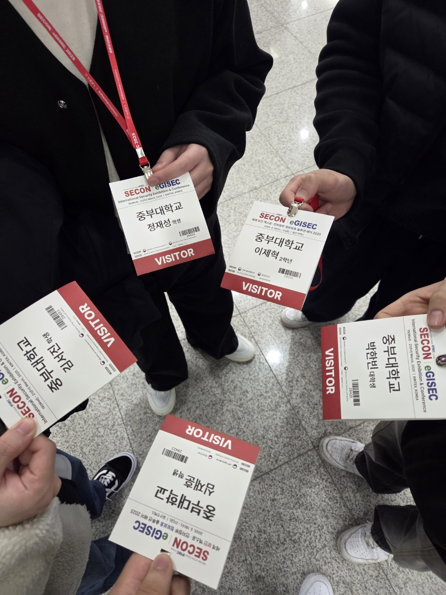

SECON은 보안 컨퍼런스로, 다양한 최신 기술과 사례를 직접 보고 배울 수
있는 기회였습니다.
생각보다 카메라와 ai를 접합해 사람들의 얼굴 분석을 하는 기업들이
많았던거 같고 적외선을 이용하여 현제 스트레스 지수 등을 측정 해주는
기기를 보고 신기했었습니다.
그치만 많은 기업들이 다 비슷한 주제로 발표를 하러 나와있었고 그래서 좀
많이 아쉬웠습니다.
SECON 출입증 모음
>

SECON 단체 사진
>